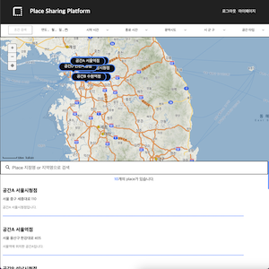
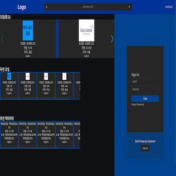
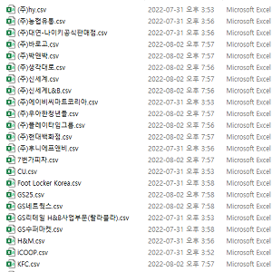

Projects

Place Sharing Platform
- 2022.11.16 ~ 2022.12.22 / 3명의 BE, 1명의 FE / 최종 프로젝트
- 사무공간을 대여하고 제공할 수 있는 플랫폼 웹 서비스입니다.
- 설계, 환경설정, 개발, 테스트, 성능 개선, 배포, 문서 정리를 수행하였습니다.
- 안정성을 위해 3개의 WAS로 시스템을 설계하였습니다.
- 신뢰성을 위해 DB 정규화, Validation, 예외 처리 등을 제안하고 적용하였습니다.
- 높은 사용자 경험을 위해 캐시를 활용한 2,000%의 성능 개선, 공간 주변의 편의 시설 정보 제공 등의 개발 수행하였습니다.
- 활용 기술: Java, Spring Boot, Spring Data Jpa, QueryDsl, Caffeine Cache, MariaDB, Thymeleaf, JUnit 5, AWS S3
Office Sharing Platform
- 2022.10.21 ~ 2022.11.11 / 3명의 BE, 1명의 FE / 중간 프로젝트
- 사무공간을 대여하고 제공할 수 있는 플랫폼 웹 서비스입니다.
- 설계, 환경설정, 개발, 테스트, 문서 정리를 수행하였습니다.
- 안정성을 위해 3개의 WAS로 시스템을 설계하였습니다.
- 신뢰성을 위해 DB 정규화를 제안하고 적용하였습니다.
- 활용 기술: Java, Spring Boot, MyBatis, MariaDB, Thymeleaf, JUnit 5

Social Activity
- 2022.09.20 ~ 2022.10.03 / 3명의 BE, 1명의 FE / 중간 프로젝트
- 액티비티 모임 서비스를 주제로 하는 웹 서비스입니다.
- 설계, 환경설정, 개발, 문서 정리를 수행하였습니다.
- 서비스의 신뢰성을 위해 DB 정규화를 제안하고 적용하였습니다.
- 활용 기술: Java, JSP, MariaDB

구직정보 스크래퍼
- 구직정보를 쉽게 모아 비교하고 파악할 수 있는 스크래퍼입니다.
- 구직이라는 본연의 목적에 집중할 수 있도록 하였습니다.
- 기술스택: Python

머신러닝을 활용한 동물사전
- 2020.07.01 ~ 2020.12.14
- 머신러닝을 활용한 동물사전 어플리케이션입니다.
- 이미지 검색의 불편함을 개선하고 편리한 정보 습득을 지원하기 위해 머신러닝과 스마트폰 카메라(안드로이드 App)를 활용하였습니다.
- 모델 설계, 개발, 학습, 어플리케이션 개발을 수행하였습니다.
- 활용 기술: Java, Python, Tensorflow

Sports Center Membership Sharing
- 2019.11.06 ~ 2019.12.18 / 4명의 팀 프로젝트
- 스포츠센터 통합 멤버십 서비스입니다.
- 1개의 멤버십으로 많은 스포츠센터에서 다양한 서비스를 누릴 수 있으면 좋곘다는 아이디어에서 시작되었습니다.
- 회원가입, 로그인, 회원정보 조회, 멤버십 등 기본적인 회원 서비스와 이를 뒷받침하는 서비스 개발을 수행하였습니다.
- 활용 기술: PHP, Oracle

PACMAN
- 2019.11.01 ~ 2019.12.09 / 2명의 팀 프로젝트
- 오픈소스로 개발된 팩맨 게임을 분석하고 수정한 프로젝트입니다.
- 추억의 게임을 함께 플레이함으로써 추억을 만들기 위해 선정하였습니다.
- 메뉴 추가, 2인 플레이 추가, 맵 확장, 고스트 추가 등의 수정을 수행하였습니다.
- 활용 기술: C, linux, AWS-EC2